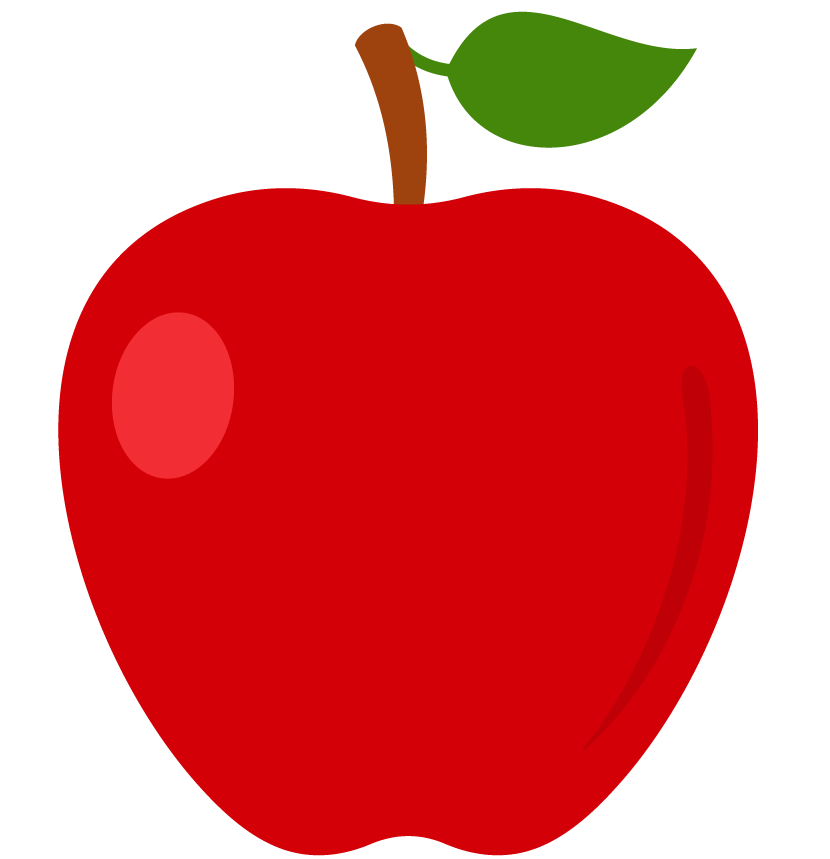
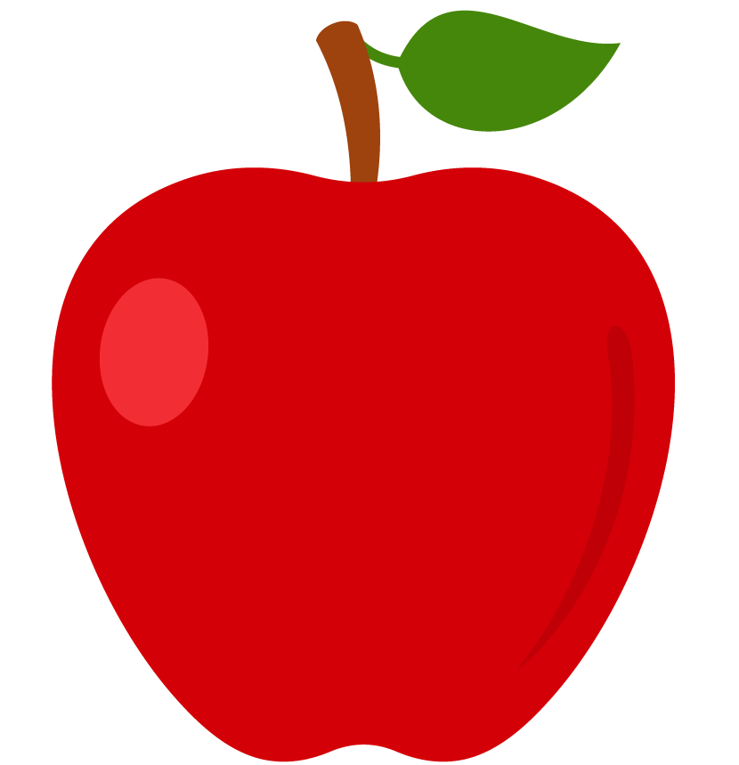

FruitOrama
Fundamentación:
-
FruitOrama nació como un proyecto con el fin de conscientizar acerca de las ventajas del consumo de frutas y demás información sobre éstas, dirigido al público general.
Objetivos:
- Informar acerca de los beneficios del consumo de frutas.
- Lograr que la gente alcance una calidad de vida superior.
- Ofrecer una interfaz intuitiva y estética para tal fin.
Origen:
-
Tener hambre en el laboratorio y querer comer medianamente saludable.
Esta materia justifica la existencia de los martes.
Santiago Amarilla
8smat88@gmail.com